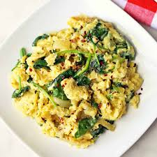

Document
Scrambled Eggs with Spinach

Description
Protein is one of the most important things that a human can get, especially
in the morning. These eggs with spinach and parmesean cheese really help you
get those nutrients in! While skeptical, these are delicious with the spinach,
and give you so many good nutrients for your first meal of the day!
Ingredients Needed
- 5 Eggs
- 1 Handful of Spinach
- 1 Tablespoon Parmesean Cheese(Optional)
- 1 Tablespoon Red Pepper Flakes
Instructions
- Set the stove to low-medium heat, and throw some cooking oil in there, preferably extra virgin olive oil.
- Crack all eggs into a bowl. Scoop out as many yolks as you wish, dump in your red pepper flakes and mix thoroughly.
- When the pan seems warm enough, put all your spinach in and mix up in the pan till it shrinks in size.
- Dump eggs into pan, and scramble until fully cooked.
- Put eggs on a plate when finished, and top with parmesean.
- Enjoy!